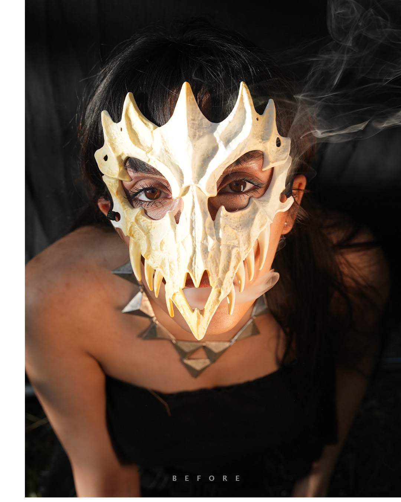
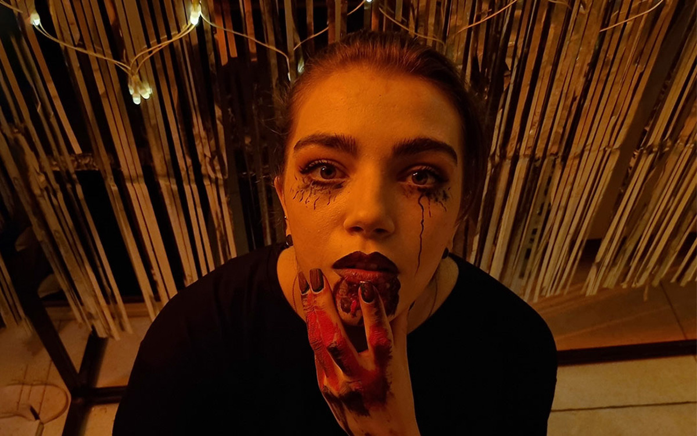

عکست تاریک، بیکیفیت یا سادست؟ یا میخوای یک کانسپت کاملاً اختصاصی و ماندگار بسازی؟ اجرای دقیق تفکیک فرکانسی و اصلاح دیجیتال پیشرفته در استودیو فتو ادیتوری.

ریتاچ شده (بعد) خام (قبل)نوار را به سمت راست بکشید تا نتیجه ادیت شده را ببینید
تفاوتی که در نگاه اول لمس میکنید
نوار وسط را به سمت راست بکشید تا نسخه اصلاحشده نمایان شود.

ریتاچ شده (بعد) خام (قبل)تمایز کار دستی آتلیهای با ابزارهای آماده
عدم استفاده از فیلترهای بلور که چهره را شبیه به عروسک مومی یا افکتهای بیکیفیت هوش مصنوعی میکنند.
انطباق دقیق دمای رنگ، زاویه تابش نور و سایههای سهبعدی برای ترکیب طبیعی عناصر.
تمام تصاویر شخصی و اسناد در محیطی ایزوله ادیت شده و پس از تایید نهایی برای همیشه پاک میشوند.
اگر تصویر ارسالی شما پتانسیل خروجی درجه یک را نداشته باشد، صادقانه پیش از دریافت وجه به شما اعلام میکنیم.
تعرفه شفاف و تعهدات هر نوع ادیت
دقیقاً بررسی کنید در ازای هر هزینه، چه تعهداتی با بالاترین کیفیت تحویل شما میشود.
ثبت سفارش در ۴ گام ساده
عکس مورد نظرتان را به صورت فایل در تلگرام به آیدی پشتیبانی ارسال میکنید.
کیفیت فایل، زمان دقیق تحویل و هزینه نهایی بدون معطلی به شما اعلام میشود.
پروژه بر اساس استانداردهای تفکیک فرکانسی و اصلاح نور وارد فرایند اجرا میشود.
پیشنمایش را بررسی میکنید؛ پس از رضایت ۱۰۰٪، فایل باکیفیت اصلی تحویل داده میشود.
پاسخ به سوالات متداول شما